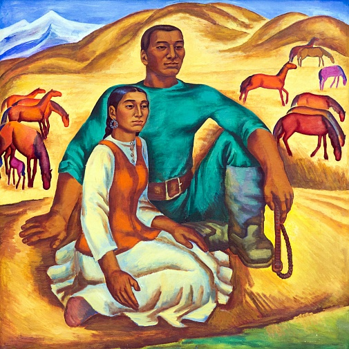

Salihtdin Aitbaev

Details:
b. 1936, Kazakhstan, Aktobe

Salihtdin Aitbaev, Awakening, 1995, 200 cm x 150 cm, Oil on Canvas.
Salihtdin Aitbaev: A Journey Through Color and Emotion
Salihtdin Aitbaev is known for his vivid color palette and emotional depth in capturing Kazakh culture and landscapes. His artworks reflect the beauty and struggles of life in Kazakhstan, often merging traditional themes with modern techniques.
His mastery of color and form allows him to evoke powerful emotions and tell compelling stories through his paintings.